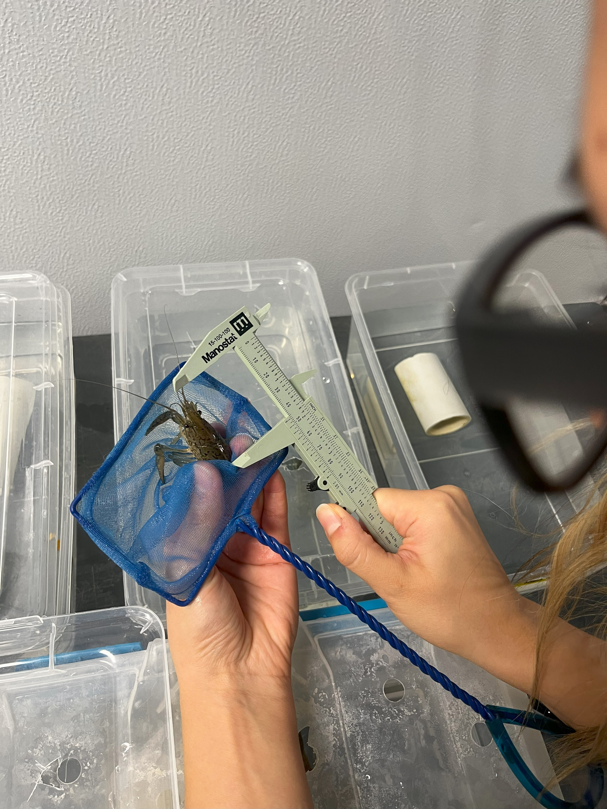
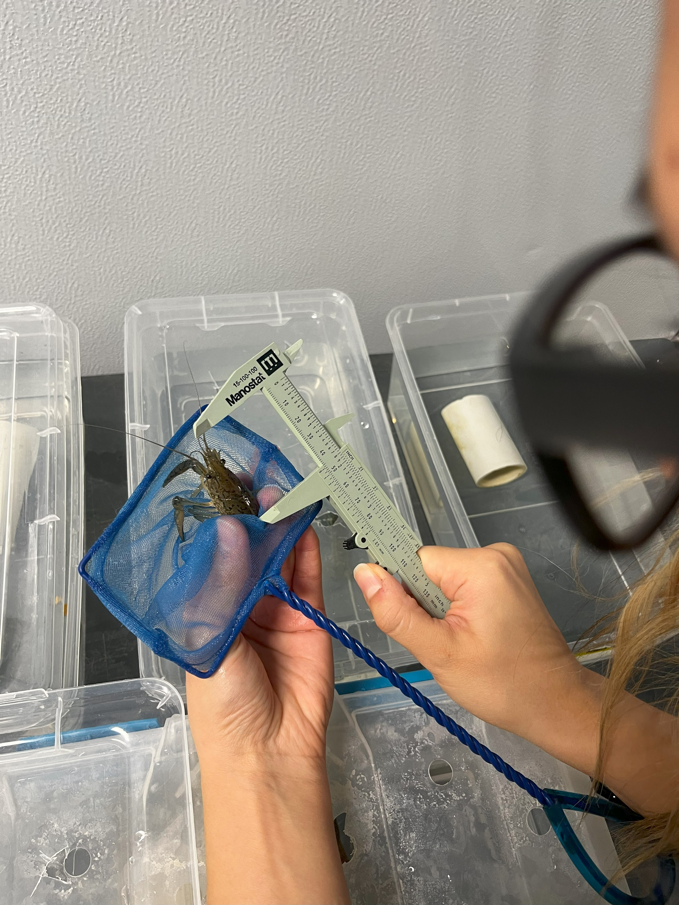

Research
Ongoing Projects
Environmental mediation of the establishment and impact of invasive crayfishes
 

Field and lab action shots of my reasearch in progress.
My doctoral research program, under the supervision of Dr. Anthony Ricciardi at McGill University, aims to understand and address the decline of freshwater biodiversity by examining the impacts of biological invasions. I am interested in understanding the where, why, and how of invasive crayfishes in the Great Lakes and St Lawrence basin. I am using field surveys, laboratory experiments, and statistical modeling to determine which water bodies are most vulnerable to invasion and how expected and realized invasive may change as climate change progresses. I am also interested in how invasive crayfishes compare competitively to native crayfishes of the region.
By providing essential data for risk assessment and evaluating management strategies, my research seeks to protect the rich biodiversity of the Great Lakes basin from current and emerging invasive threats.
This work is supported by the Natural Sciences and Engineering Research Council of Canada (NSERC) through the Canada Graduate Scholarship-Doctoral (CGS D) and by the the McGill Graduate and Postdoctoral Studies Fellowships Committee through the 2024/25 Richard H. Tomlinson Doctoral Fellowship.
Past Projects
Collection of baseline ecological information adress information gaps in Far Northern Ontario - Canadian Wildlife Service - Ontario
, via Anamalia. Right: Grey Wolf (*Canis lupus*) Fool4myCanon, [CC BY 2.0](https://creativecommons.org/licenses/by/2.0), via Wikimedia Commons](WebsiteImages/Howling_wolf1.jpg)
Left: Boreal Caribou (Rangifer tarandus caribou). Alain caron 2020, CC BY-SA 4.0, via Anamalia. Right: Grey Wolf (Canis lupus) Fool4myCanon, CC BY 2.0, via Wikimedia Commons
From 2022 to 2024, I had the privilege of working as a federal public servant with the Canadian Wildlife Service - Ontario Region, focusing on addressing biodiversity related information gaps in Far Northern Ontario, part of Treaty 9 territory, the traditional lands of the Anishnaabeg, Oji-Cree, Omushkegowuk, and Métis Peoples (Leslie 2020). Far Northern Ontario is composed of vast peatlands and old-growth conifer stands that support several Species at Risk, including boreal and eastern migratory caribou (Hornseth & Rempel 2016; Magoun et al. 2005). It is also home to The Ring of Fire (RoF), a large area within the Hudson Plains ecoregion that is rich in critical minerals for electric vehicle (EV) manufacturing. A regional assessment regarding the potential impacts of mineral extraction from the RoF has been announced, and the draft terms of agreement were published in September 2024. As a Wildlife Habitat Biologist, my role was broad and fulfilling, supporting the collection of baseline ecological information in Far Northern Ontario with a particular focus on boreal caribou predators - specifically grey wolf vocalization analysis and modeling. During this time, I developed and applied skills in geospatial analysis using ArcGIS Pro, Bayesian statistical modeling and power analysis, information management, procurement, as well as student hiring and supervision. Check out a publication from this work here.
Occupancy & impacts of Northern Crayfish (Faxonius virilis) in tributaries of in the North Saskatchewan River basin - M.Sc Research


Left: A happy scientist holding the first invasive Northern Crayfish of the field season (2020) Right: Dissecting invasive Northern Crayfish for stabe Isotope Analysis (2021).
From 2019 to 2021, I conducted research on the occupancy and impacts of invasive Northern Crayfish (Faxonius virilis) in the North Saskatchewan River basin. My work was nested within the larger North Saskatchewan River watershed integrity and aquatic ecosystem health project - a partnership between the University of Alberta, Alberta Innovates Water Innovation Program, the Government of Alberta, and EPCOR. To read more about the watershed integrity project, please visit this summary. Through this work, I earned my Master of Science under the supervision of my committee members (Dr. Stephanie Green, Dr. Mark Poesch, and Dr. Craig Emmerton) and published my first peer-reviewed publication. During this time, I planned and conducted field work to sample and collect invasive crayfish and native fishes in tributaries of the prairie, mid-land, and rocky mountain regions of the watershed (see the Gallery page for some field work photos). The resulting data was first used to determined the in-stream environmental characteristics most associated with the crayfish’s occupancy in the NSR and determine which unoccupied tributaries are most prone to crayfish invasion. Ultimately, my findings indicated that water temperature alone drove occupancy of F. virilis in the NSR and that tributaries with mean summer water temperatures greater than 18.7 °C having a 50% + likelihood to be occupied by F. virilis and thus, are at highest risk for subsequent invasion. With these results, I was able to provide practical guidelines for watershed management of invasive F. virilis populations in the NSR and Alberta. For more info, please see Van Mierlo et al, 2022.
Additionally, I used stable isotope analysis to investigate if F. virilis sympatry was related to differences in isotopic characteristics and/or reduced condition of native fishes. My results suggested that F. virilis may be utilizing dietary plasticity to exploit a slightly different trophic niche than native fishes and in doing so, avoid exploitative competition for nutritional resources. Dietary plasticity may be facilitate the establishment and invasion of F. virilis populations in unoccupied tributaries of the NSR where F. virilis could negatively affecting rare/sensitive fish species through indirect or direct forms of competition. For more information, please see my published thesis on the University of Alberta Archive or my popular article in Nature Alberta (pg.12-13).
Publications
Peer-Reviewed
McFarlane, S., Van Mierlo, V., Manseau, M., Kroeze, A., Eberhardt, E., & Girard, J. (2025). Bioclimatic, terrain, and specific peatland composition are major drivers of woodland caribou winter habitat suitability in northern Ontario. Canadian Journal of Zoology, 103, 1–18. https://doi.org/10.1139/cjz-2024-0121
Van Mierlo, V. A., Green, S. J., Emmerton, C. A., Nasr, M., Buendia, C., Wyatt, F. R., & Poesch, M. S. (2022). Occupancy of invasive Northern Crayfish (Faxonius virilis) in northern streams is associated primarily with water temperature. Freshwater Science, 41(4), 650–664. https://doi.org/10.1086/722576
Tahir, I., Van Mierlo, V., Radauskas, V., Yeung, W., Tracey, A., & da Silva, R. (2022). Blended learning in a biology classroom: Pre-pandemic insights for post-pandemic instructional strategies. FEBS Open Bio, 12(7), 1286–1305. https://doi.org/10.1002/2211-5463.13421
Theses & Popular Articles
Van Mierlo, V. A. (2021). Occupancy and Impacts of the Northern Crayfish (Faxonius virilis) in Tributaries of the North Saskatchewan River Basin [University of Alberta]. https://doi.org/10.7939/r3-eyee-th45
Van Mierlo, V. A. (2022, July). The Invasive Northern Crayfish: An Unwelcome Visitor to Alberta’s Watersheds. Nature Alberta Magazine, 52(Summer 2022), 12–13.
References
Hornseth, M. L., & Rempel, R. S. (2016). Seasonal resource selection of woodland caribou (Rangifer tarandus caribou) across a gradient of anthropogenic disturbance. Canadian Journal of Zoology, 94(2), 79–93. https://doi.org/10.1139/cjz-2015-0101
Leslie, J. (2020). Treaty 9. In The Canadian Encyclopedia. Retrieved from https://www.thecanadianencyclopedia.ca/en/article/treaty-9
Magoun, A. J., Abraham, K. F., Thompson, J. E., Ray, J. C., Gauthier, M. E., Brown, G. S., Woolmer, G., Chenier, C. J., & Dawson, F. N. (2005). Distribution and relative abundance of caribou in the Hudson Plains Ecozone of Ontario. Rangifer, 105–121. https://doi.org/10.7557/2.25.4.1776